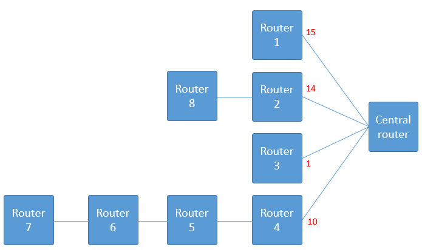

Congestion Control
Congestion occurs when too many packets are present in the subnet.
If congestion is too high, routers begin loosing packets.
The routers loose packets because they are forced to throw away packets without inspecting them because there are no buffers left to store them.
Congestion may be caused by 2 things:
- Network topology
- Hardware
Congestion that is caused by network topology
Suppose we have a star topology network like the one shown below:

In such a network, it might be hard to predict data rate coming towards the central router.
This is because there are 3 routers that could all potentially send data at the same time.
This means the buffer could fill up very quickly, meaning packets will got lost quicker, resulting in congestion.
Most people will say "why not use a bigger buffer?"...
- For a given router, if the time taken for a packet to travel from the back of the buffer to the front of the buffer is > timeout period, the router will resend the packet.
- This results in duplicate packets.
- Causing 'Congestion Collapse' (when a network cannot send or receive anymore packets)
- So by using a bigger buffer, we managed to make congestion even worse!
Congestion tends to feed upon itself and become worse. Like a rotting corpse, you can't stop it from rotting when it's off.
Let's suppose we add 4 more routers to this network (Router 5, Router, 6, Router 7 and Router 8):
Router 7 sends data to Router 6, which sends data to Router 5, which sends data to Router 4.
So if Router 4 becomes congested routers 5, 6 and 7 will also become congested.
Those red numbers indicate how many packets each router wants to send (e.g. Router 2 wants to send 14 packets)
Router 4 will send all 10 packets at once, and will then wait for an ACK (assuming Router 4 uses a sliding window protocol)
Router 4 will save a copy of these 10 packets in its own buffer.
Buffer of Router 4 becomes congested.
Therefore, Routers 5, 6 and 7 become congested.
The congestion has spread through the network causing 'Backpressure' (when a router becomes congested, the congestion feeds upon itself and spreads in the network)
Congestion that is caused by hardware
Slow processors in routers can also cause congestion.
It is a common issue in networks that have machines of varying processing speeds (some slow, some fast, some normal)
Network engineers usually try to make the network speed < backbone speed

Visualising Congestion
The following graph shows that the number of packets sent (aka. offered load), is proportional to the number of packets delivered (aka. goodput), atleast when the data rate is < max capacity.
The max capacity of the network indicates how many packets can be in the network at one time.
The graph shows us 3 different scenarios:
- BEST CASE: Ideal - when there is no congestion
- AVERAGE CASE: Desirable response - when the data rate approaches the max capacity, the number of packets delivered will fall behind the ideal curve slightly. There is still no congestion, but we might loose a bit of data, nothing dramatic though.
- WORST CASE: Congestion Collase - congestion occurred because there were too many duplicate packets. You can see the curve continues to get progressivley worse, because congestion feeds upon itself.
Policies that affect congestion
There are policies from the Data-Link, Network and Transport layer that affect congestion:

These policies I have mentioned in this table are what we call 'Open Loop' solutions...